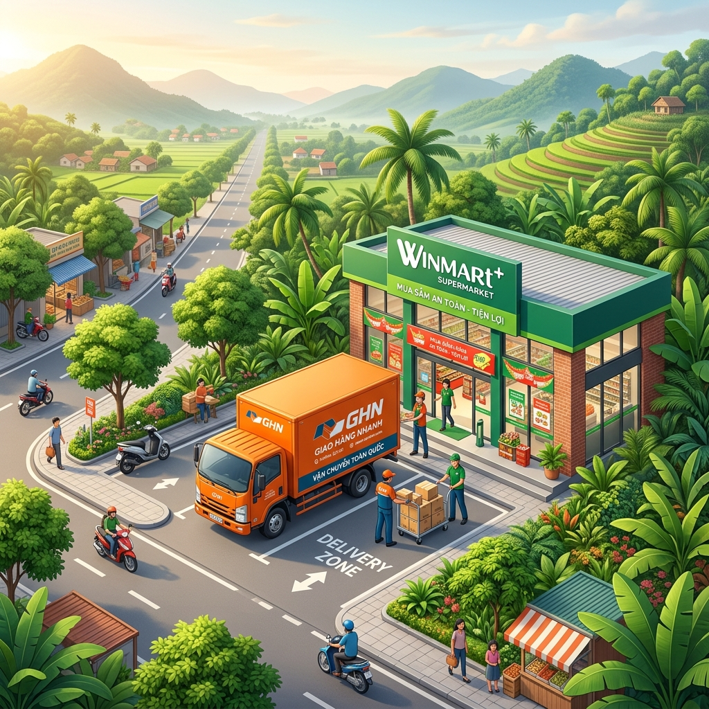

← Quay lại Công cụ Giải pháp
GIẢI PHÁP VẬN TẢI: DC PHÚ THỌ - WINMART

1. TỔNG QUAN YÊU CẦU
Giao hàng từ Kho DC Win Phúc Thọ (Xã Liên Minh, Huyện Thanh Ba, Phú Thọ) đến hệ thống siêu thị Winmart/Winmart+ trên toàn tỉnh Phú Thọ.
- Sản lượng: 8 Tấn/ngày.
- SLA: Giao hàng trong vòng 1 ngày (24h).
- Mục tiêu: Tối ưu hóa lộ trình từ phía Bắc tỉnh, tận dụng mạng lưới Hub Việt Trì làm điểm trung chuyển cho các Zone phía Nam.
2. PHÂN VÙNG VẬN HÀNH (ZONING)
Với DC đặt tại Thanh Ba, trọng tâm vận hành sẽ dịch chuyển lên phía Bắc tỉnh:
| Vùng |
Địa bàn bao phủ |
Đặc điểm & Mô hình |
| Zone 1 (Immediate) |
Thanh Ba, Đoan Hùng, Hạ Hòa, TX. Phú Thọ |
Vùng lân cận DC, giao hàng trực tiếp từ DC bằng xe 1.25T Milk-run. |
| Zone 2 (Core) |
Việt Trì, Phù Ninh, Lâm Thao |
Trung tâm kinh tế, cần linehaul từ DC về Hub Việt Trì, sau đó phân phối. |
| Zone 3 (West) |
Cẩm Khê, Yên Lập, Tam Nông |
Chạy dọc tuyến QL32C, giao hàng xuyên tâm (Linehaul). |
| Zone 4 (South) |
Thanh Sơn, Thanh Thủy, Tân Sơn |
Xa nhất, cần trung chuyển qua Hub hoặc Bưu cục node phía Nam. |
3. SƠ ĐỒ LUỒNG CÔNG VIỆC (FLOWCHART)
graph TD
A[DC Win Phúc Thọ - Thanh Ba] -- "Xe 8T (Night Shift)" --> B{Hub Việt Trì / Phân loại tại DC}
A -- "Zone 1: Giao trực tiếp" --> C1[Xe 1.25T Milk-run]
B -- "Zone 2: Tuyến trung tâm" --> C2[Xe 1.25T & 3.5T]
B -- "Zone 3,4: Tuyến phía Nam" --> D[Xe 3.5T Linehaul]
C1 --> E1[Winmart+ Thanh Ba/Đoan Hùng/Hạ Hòa]
C2 --> E2[Winmart Việt Trì / Phù Ninh]
D -- "Drop-off" --> F1[Bưu cục Thanh Sơn]
D -- "Drop-off" --> F2[Bưu cục Cẩm Khê]
F1 --> G1[Winmart+ Thanh Sơn/Tân Sơn]
F2 --> G2[Winmart+ Cẩm Khê/Yên Lập]
E1 & E2 & G1 & G2 --> H((Hoàn tất POD))
4. LỊCH TRÌNH VẬN HÀNH (SOP)
| Thời gian |
Hoạt động |
Ghi chú |
| 18:00 - 21:00 (T-0) |
Picking & Packing tại DC |
Winmart chuẩn bị hàng theo đơn. |
| 21:00 - 23:00 (T-0) |
Loading & Transport |
Xe 8 tấn GHN vận chuyển hàng về Hub. |
| 23:00 - 03:00 (T+1) |
Sorting & Cross-docking |
Chia hàng theo 4 Zone. |
| 04:00 - 07:00 (T+1) |
Linehaul đến Bưu cục |
Xe trung chuyển đưa hàng về các điểm node. |
| 07:30 - 12:00 (T+1) |
Wave 1 Delivery |
Giao hàng siêu thị lớn / trọng điểm. |
5. CAM KẾT CHẤT LƯỢNG (KPI)
- Tỷ lệ giao hàng đúng hạn (SLA): >98%
- Thời gian phản hồi thông tin: <15 phút
- Tỷ lệ hư hỏng hàng hóa: <0.05% (Đặc thù hàng siêu thị)
- POD Accuracy: 100% chứng từ trả về trong 24h.